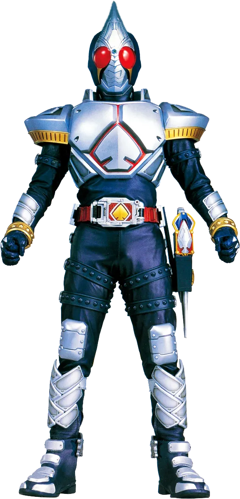

Kenzaki Kazuma is the main protagonist of Kamen Rider Blade. He is an employee of B.O.A.R.D. who transforms into Kamen Rider Blade
Blade's default form assumed by using the Blay Buckle and Change Beetle Rouse Card. The transformation fuses the user with the DNA of the Beetle Undead.
Rider Statistics[3]Rider Height: 201 cm
Rider Weight: 101 kg
Rider Senses[3]
Eyesight: 15 Km
Hearing: 5 Km
Ability Parameters[3]
Punching Power: 280 AP (2.8 t.)
Kicking Power: 480 AP (4.8 t.)
Maximum Jump Height: 33 m
Maximum Running Speed: 100 m per 5.7 seconds

Jack Form is a combat extension of the Rider System which harnesses the power of Category Jack Rouse Cards via the Rouse Absorber. Blade assumes his Jack Form by inserting the Absorb Capricorn Rouse Card into the Rouse Absorber and scanning the Fusion Eagle Rouse Card
Rider Statistics[2]Rider Height: 201 cm
Rider Weight: 111 kg
Ability Parameters[2]
Punching Power: 350 AP (3.5 t.)
Kicking Power:550 AP (5.5 t.)
Maximum Jump Height: 133 m
Maximum Running Speed: 100 m. per 4.6sec
Maximum Flying Speed: 300 km/h.[9] (100 m. per 1.2)
Maximum Jump Height: 133 m

King form is the ultimate combat extension of the Rider System. The transformation is initiated by inserting the Absorb Capricorn Rouse Card into the Rouse Absorber and scanning the Evolution Caucasus Rouse Card
Rider Statistics[2]
Rider Height: 201 cm
Rider Weight: 131 kg
Ability Parameters[2]
Punching Power: 450 AP [4.5 t]
Kicking Power: 700 AP (7 t.)
Maximum Jump Height: 25 m
Maximum Running Speed: 100 m. per 6.6 sec